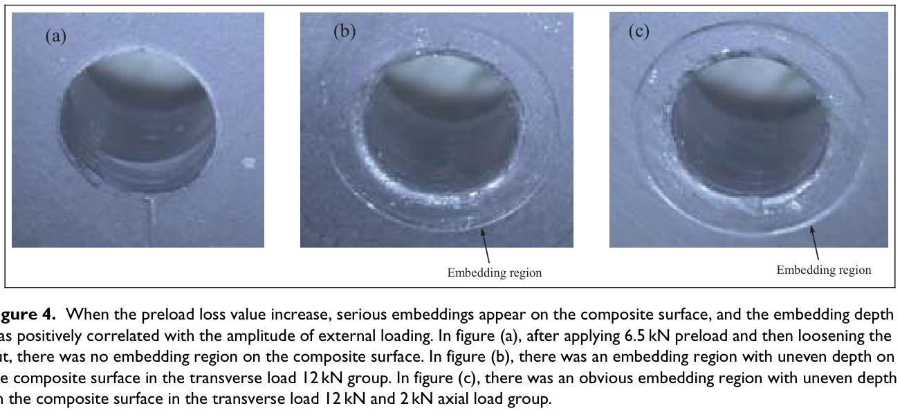
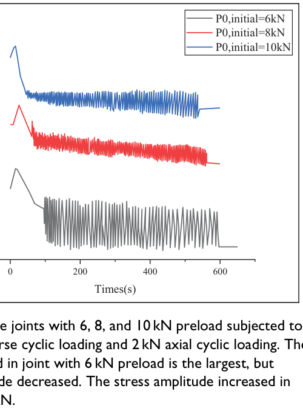

Yang 2023 Ame — estudo de caso— case study
Figura do artigoPaper figure


Figura(s) originais do artigo (recorte do PDF) — a fonte dos pontos que foram digitalizados.Original figure(s) from the paper (PDF crop) — the source of the digitized points.
Condições do ensaioTest conditions
| ReferênciaReference | Yang et al. (2023). Adv. Mech. Eng. 15(1) · doi:10.1177/16878132221145342 |
| ParafusoBolt | M6x1.0 |
| Pré-carga F0Preload F0 | 6 kN |
| AmplitudeAmplitude | — |
| FrequênciaFrequency | 2 Hz |
| Família / nº de curvasFamily / curves | axial · 1 |
| MAE medianomedian | 0.029 |
Informações do artigo — aparato, corpo-de-prova, matriz de ensaiosPaper information — apparatus, specimen, test matrix
Yang et al. 2023 (Adv Mech Eng) — Preload loss of CFRP bolted joint without rotation under transverse and axial loading
Citation + DOI
Haoran Yang, Luling An, Xu Chen, Liyang Zou, "Preload loss of CFRP bolted joint without rotation under transverse and axial loading," *Advances in Mechanical Engineering* 15(1) (2023), 1-9. DOI: 10.1177/16878132221145342. Open access (CC BY 4.0). Jiangsu Key Laboratory of Precision and Micro-manufacturing Technology, Nanjing University of Aeronautics and Astronautics (NUAA), China. Funded by NSFC 51975280.
Gap tag(s)
- G1 (primary) — a single biaxial rig applying independently-controlled transverse AND
axial cyclic load amplitude to the SAME joint, with real-time continuous preload measurement. Gives a direct 3-way comparison at matched F0/frequency/cycle-count: transverse-only, axial-only, and simultaneous biaxial (Fig. 3a/b/c) — a clean test of whether the two loading directions' preload-loss contributions simply add, or interact (answer: they interact strongly and non-additively — see Main conclusions).
- G8 (secondary) — composite/dissimilar-material joint: CFRP laminate panel + 30CrMnSiA
steel bolt/panel + TC16 titanium self-locking ("jet") nut. The CFRP's very low through-thickness (transverse, S22-direction) strength (YC = 23 MPa, YT = 72 MPa — see Table 1) makes bolt-head embedment into the composite surface the dominant, almost exclusive, preload-loss mechanism, since the self-locking nut suppresses rotational loosening almost completely. This is a rare case in the library where embedment can be studied in near-isolation from rotation and (largely) from fretting wear.
Rig / apparatus
- Machine / loading direction: purpose-built biaxial rig using **two MTS servo-hydraulic
actuators** — one applying transverse (in-plane shear) load to the CFRP panel, one applying axial (tension) load to the steel panel/axial fixture. This is explicitly NOT a Junker-type crank/eccentric-displacement rig; both actuators are independent force-controlled hydraulic cylinders (extends the Eccles et al. improved-Junker / Kapidžić-style biaxial fatigue rig concept cited in the Introduction).
- Control mode: FORCE-controlled, both axes. The load-time law is explicit
(paper's Formula 1): F(t) = F·[1/2 + 1/2·sin(4πt − π/2)], a pulsating (R≈0, 0→F_amp) half-sine at 2 Hz, i.e. never reverses sign — each actuator ramps from 0 up to its target amplitude and back every 0.5 s. Maps directly to BAS V2 force-mode (step_cycle(F_amp, theta_load, freq), no delta_amp); there is no displacement/stroke control at all in this rig.
- Preload measurement: Messtechnik K-180 load-cell/washer, range 30 kN, sampling
frequency 30 Hz, installed in the axial load path so it reads the actual bolt clamp force continuously in real time throughout the whole test (ramp + hold + 1000 cycles + unload) — the same "continuous ground truth" quality tier as Liu2016/Liu2017's rig, much better than periodic torque-check protocols.
- Rotation angle: nut and bolt were marked with a paint line across the flats and
measured for rotation ("loosening angle") — a manual/optical read, not continuous; reported as a qualitative/scalar result (small, mostly confined to the very start of loading), not a curve.
- Test-rig assembly (Fig. 2): the CFRP panel is bolted (M20) to the transverse-actuator
module; a steel panel is bolted (M20) to a fixed module and, via an axial fixture (connected with two M6 bolts), to the axial-actuator module. The M20/M6 bolts are rig assembly hardware — the actual specimen/test bolt is the small aerospace fastener described below, instrumented by the K-180 cell.
Specimen / materials
- Bolt under test:
HB1-101-6*36— a Chinese aerospace-standard (HB) small fastener,
MJ6 thread (ISO 5855 MJ series, 6 mm nominal, controlled-radius root — aerospace fine-tolerance thread), material 30CrMnSiA steel (same alloy as the steel panel/fixture).
- Nut:
HB8026-MJ6*1— a self-locking "jet nut", material TC16 titanium alloy.
The self-locking feature is intrinsic to the jet-nut design (not a separate nylon insert/deformed-thread add-on the paper describes) and is explicitly credited with suppressing rotational loosening almost entirely under both uniaxial and biaxial loading.
- CFRP panel: 48-ply laminate,
HRC1-33%224KHF10-U-125gsm-1000UD carbon/epoxy
prepreg (125 gsm areal weight). Layup (OCR-corrected from garbled subscripts/signs in the source PDF — the digit sequence "245" is almost certainly "−45"; verified because the ply count reconciles exactly): [45/0/−45/90/−45/90/45]₃ + [45/90/−45]ₛ + [45/90/−45/90/−45/0/45]₃ = 21 + 6 + 21 = 48 plies, matching the stated total. Cured laminate thickness is not explicitly stated (only ply count + areal weight given) — not reliably back-calculable without a resin content/cured-ply-thickness assumption, flagged as missing. Lamina properties (Table 1, supplier data): E1=138.23 GPa, E2=8.02 GPa, G12=G13=3.89 GPa, G23=2.65 GPa, ν12=0.33, X_T=2311 MPa, X_C=1021 MPa, Y_T=72 MPa, Y_C=23 MPa (very low transverse/through-thickness compressive strength — the direct cause of embedment), S12=S13=90 MPa.
- Steel panel + bolt:
30CrMnSiA(a Chinese low-alloy high-strength structural steel). - Panel dimensions (Fig. 2): CFRP panel ≈160 mm × 40 mm (thickness not stated, see
above); steel panel and axial-fixture drawings given but not digitized (geometry context only, not curve data).
- Surface finish (Ra/Rz): not reported for either the CFRP or steel/Ti surfaces —
a gap relative to BAS V2's emb_depth_vdi roughness-class lookup. In any case, VDI 2230 embedment tables are metal-on-metal asperity-crushing correlations and would not be physically appropriate for a CFRP transverse-compression embedment mechanism anyway — this paper's embedment is a different physical regime (bulk through-thickness compressive yielding/crushing of the composite under the bolt-head bearing footprint, not asperity flattening).
- Lubrication: not mentioned anywhere in the text — presumed dry/as-assembled (no
lubricant application step described).
- Locking device: the HB8026 jet nut itself (self-locking by design, see above); no
separate washer-type locking device. The Conclusions section explicitly *recommends* a hard washer as an anti-embedment countermeasure for future designs, but this was not tested experimentally in this paper (a suggestion, not a result).
- FEM contact friction (used only in the finite-element stress/embedment analysis
described below, NOT a measured value): μ=0.12, penalty tangential behavior, hard-contact normal behavior, all interfaces, mesh C3D8R at 0.1 mm density, Abaqus.
Test matrix
| Group | Curves | Transverse amp | Axial amp | Nominal F0 | Frequency | Cycles |
|---|---|---|---|---|---|---|
| Amplitude-effect (Fig. 3) | (a) transverse-only, (b) axial-only, (c) biaxial | 12 kN (a, c); 0 (b) | 0 (a); 2 kN (b); 2 kN (c) | 6.5 kN (all three) | 2 Hz | 1000 |
| Preload-effect (Fig. 5) | 3 curves, F0 = "6/8/10 kN" (legend, rounded) | 12 kN (all 3) | 2 kN (all 3) | 6.5 / 8.5 / 10.5 kN (text) | 2 Hz | 1000 |
- The paper states 13 groups total were run (orthogonal design sweeping transverse
amplitude, axial amplitude, and F0), but only these two representative comparisons (6 curves total) are plotted with real-time traces — the other combinations in the 13-group matrix are summarized only qualitatively in prose ("when transverse ≤6 kN and axial ≤2 kN, no significant change"), not shown as curves. This paper does not give us the full 13-group dataset, only these 6 digitizable curves.
- Static strength tests (axial and transverse) were run first; 60% of the measured
strength was chosen as the max cyclic amplitude ceiling for the test design (stated max transverse amplitude tested anywhere = 12 kN, max axial = 3 kN — note the reported curves only go up to axial=2 kN, so the 3 kN axial ceiling is not represented in any digitized curve here).
- Before the 1000 counted cycles, "the transverse load had been loaded to half of the
load amplitude, and the axial load had been loaded to half of the load amplitude" — a static ramp-and-hold precedes the cyclic phase in every curve (see Experimental nuances).
- Important, non-obvious cross-reference: Fig. 5's "P0,initial=6 kN" (gray) curve and
Fig. 3(c)'s biaxial curve are, to within our digitization precision, the same physical test (start/peak/end values match to <1% of F0): both are nominal 6.5 kN, 12 kN transverse + 2 kN axial. The paper reuses this one curve in both figures (Fig. 5 legend just rounds 6.5→"6"). By the same logic, Fig. 5's "8 kN"/"10 kN" legend labels are the text's stated 8.5/10.5 kN targets, rounded down. yang2023ame_F0_6kN.csv is therefore intentionally identical to yang2023ame_biaxial.csv, not an independent re-digitization.
Experimental nuances
- Preload rises before it falls, in every single curve. All six curves show the same
qualitative shape: a fast transient RISE (during the static ramp-to-half-amplitude hold, before the 1000 counted cycles begin) that overshoots the nominal target F0, followed by decay once cyclic loading engages. E.g. panel (a): flat baseline 6150 N (already below the 6.5 kN nominal, reflecting the static transverse half-load already engaged) then a sharp jump to a 6510 N peak as soon as full-amplitude cycling starts. Panel (c)/Fig. 5 gray: baseline ≈5850 N rising to a 6510-6520 N peak ~15-20 s in, before declining. This "increase-then-decrease" is called out explicitly in the Fig. 3 caption and is a genuine embedment/bearing-geometry effect of applying the transverse or axial static component, not a measurement artifact — worth reproducing if the model is pushed to include the ramp-up phase, but it is NOT part of the steady cyclic mechanism and is excluded from the CSVs (see Digitization caveats).
- Two distinct pre-cyclic shapes depending on which actuator dominates: the
transverse-only case (a) shows a genuine flat static hold (~0-95 s) before a sharp discontinuous jump into cycling; the axial-only (b) and biaxial (c)/Fig.5 cases show a continuous rise-then-decline ramp with no flat plateau, and oscillation blends in more gradually. We used this to place each curve's "cycle 0" (see Digitization caveats/V2 mapping).
- **Oscillation-band (stress-amplitude) trend is F0- and mode-dependent and
non-monotonic across the sweep**: caption of Fig. 5 states band width *decreases* over cycles for the 6 kN case but *increases* for the 10 kN case; text attributes the 10 kN growth to progressive matrix/interlaminar damage extension in the composite. Panel (b) (axial-only) similarly shows a *widening* band over cycles ("the variation ranges in each cycle of preload are larger"). This amplitude-growth phenomenon is a signature the current BAS V2 per-cycle envelope mechanisms do not explicitly target (they track the mean/F0 decay, not the ripple width) — flag as a possible secondary validation target, not a primary one.
- After the 1000 cycles + unload, there is one more sudden static step (e.g. −200 N in
panel a; the reverse, +100 N, in panel b) as the dynamic load is fully removed. Not part of the cyclic mechanism; reported only in prose (final settled values below), not in the CSVs.
- **Embedment depth values in the paper are FEM/analytical-hybrid, NOT direct
measurements of the actual cyclic-loading embedment** (this matches the task's hint). The direct embedding-depth measurement (thickness before/after, in a *separate*, non-cyclic, uniform-indentation experiment sweeping only static preload) was combined with FEM (Abaqus, S22 stress under the bolt head) to fit S22 = f(depth) (Fig. 8, an exponential-looking fit whose printed coefficients are OCR-garbled in the source PDF and not confidently reconstructed here — not needed since Fig. 8/9 are FEM/hybrid and excluded from digitization per task instructions anyway). The paper then used a separate FEM run (bolt load → transverse load → axial load, 3 analysis steps) to get average S22 under each of the Fig. 3/5 *cyclic* loading conditions, converted that to an "equivalent" embedding depth via the Fig. 8 fit, and finally converted depth→preload-loss analytically via a series-spring formula (P_em = [K_B·K_C/(K_B+K_C)]·δ_em, their Formula 2-5). None of the embedding-depth or S22 numbers below are direct experimental readings of the actual fatigue-tested specimens — they are model-based attributions layered on top of the one real, directly-measured quantity (the K-180 load-cell preload-vs-time trace, which is what we digitized).
- Embedding-attributed fraction of total measured preload loss (from the hybrid
FEM+analytical route above, applied to the *directly-measured* total losses):
| Curve | Total measured loss | Embedding depth (FEM-derived) | Embedding-attributed loss | Fraction |
|---|---|---|---|---|
| Transverse-only (Fig. 3a) | 706 N | ≈9 µm | ≈264 N | 37.3% |
| Axial-only (Fig. 3b) | 396 N | ≈8 µm | ≈235 N | 59.3% |
| Biaxial (Fig. 3c / Fig. 5 "6 kN") | 1962 N | ≈18 µm | ≈528 N | 26.9% |
Note the counter-intuitive trend: embedding depth is largest under biaxial loading, yet its *fraction* of the total loss is smallest there — the paper attributes the unexplained remainder to cyclic-plasticity/fretting-wear growth of the embedding depth beyond what the (static-load-amplitude-only) FEM model captures, i.e. the FEM route systematically under-attributes embedding at the most severe (biaxial) condition.
- No fretting-wear or rotational-loosening curve data at all — both are explicitly
*assumed negligible/ignored* by the authors (rotation confirmed small by the paint-mark measurement; wear surfaces "not severely worn," visually assessed from Fig. 4 photos, not quantified). The paper's entire quantitative preload-loss story is the single real-time K-180 trace + the embedding attribution above — there is no separate wear-rate or rotation-angle-vs-cycle curve to digitize.
- Complex-load FEM (thread geometry) was reported to have convergence difficulties, hence
the authors simplified to a threadless FEM model for the S22/embedment analysis — an FEM modeling choice, not relevant to the experimental curves themselves.
Main conclusions
- Under biaxial transverse+axial cyclic loading with a self-locking jet nut, preload loss
is driven almost entirely by CFRP surface embedment under the bolt head/washer bearing footprint — rotational loosening is nearly absent (self-locking nut) and fretting wear is visually minor.
- Biaxial loading produces much larger absolute preload loss than either uniaxial
component alone (1962 N vs 706 N transverse-only vs 396 N axial-only, all at nominal F0≈6.5 kN) — the two loading directions' damage does not simply add, it compounds (embedment gets deeper and more irregular under combined loading, per the Fig. 4 photos).
- Lower initial preload gives larger relative (and absolute) preload loss; a 6 kN
joint loses proportionally more than 8 or 10 kN under the same biaxial cyclic load. Oscillation-amplitude (band-width) trend over cycles is preload-dependent: shrinks over time at low F0 (6 kN), grows over time at high F0 (10 kN, attributed to progressive composite damage).
- Initial preload level has no significant effect on rotational loosening (already
minimal in all cases) — it only affects the magnitude/character of the (embedment-driven) axial preload decay.
- Preload can rise above its nominal target transiently right after the static
half-amplitude ramp / at the very start of cycling, before the embedment-driven decay dominates.
- Recommended countermeasure (not tested): a hard washer to spread bearing stress and
keep S22 below the CFRP's embedment threshold.
Curve inventory
| Figure | Condition | CSV filename | x-axis unit | F0 used | # points |
|---|---|---|---|---|---|
| Fig. 3(a) | Transverse-only 12 kN, nominal F0=6.5 kN | yang2023ame_transverse.csv | cycle # (approx., see caveats) | 6150 N (value at start of cycling) | 16 |
| Fig. 3(b) | Axial-only 2 kN, nominal F0=6.5 kN | yang2023ame_axial.csv | cycle # (approx.) | 6340 N (value at start of cycling) | 15 |
| Fig. 3(c) | Biaxial transverse 12 kN + axial 2 kN, nominal F0=6.5 kN | yang2023ame_biaxial.csv | cycle # (approx.) | 5150 N (value at start of cycling) | 15 |
| Fig. 5 | Biaxial 12+2 kN, P0,initial="6 kN" (nominal 6.5 kN) — same test as Fig. 3(c) | yang2023ame_F0_6kN.csv | cycle # (approx.) | 5150 N | 15 (identical to biaxial.csv) |
| Fig. 5 | Biaxial 12+2 kN, P0,initial="8 kN" (nominal 8.5 kN) | yang2023ame_F0_8kN.csv | cycle # (approx.) | 7350 N (value at start of cycling) | 15 |
| Fig. 5 | Biaxial 12+2 kN, P0,initial="10 kN" (nominal 10.5 kN) | yang2023ame_F0_10kN.csv | cycle # (approx.) | 8850 N (value at start of cycling) | 15 |
Not digitized (context only): Fig. 1 (rig photo), Fig. 2 (fixture/specimen dimension drawings), Fig. 4 (embedding-region photographs, qualitative), Fig. 6 (FEM master/slave-surface assignment diagram), Fig. 7 (photo + FEM S22 field, not a curve), Fig. 8 (S22-vs-embedding-depth fit — FEM/hybrid-analytical, excluded per task instructions), Fig. 9(a,b) (S22 and embedding depth vs load amplitude — FEM, excluded), Fig. 10 (spring-model schematic for Formula 2).
V2 mapping
- Force-controlled biaxial rig → BAS V2 force-mode (`step_cycle(F_amp, theta_load,
freq), no delta_amp), same handling as Liu2016/Liu2017. Two independent force amplitudes act simultaneously (transverse + axial) in the biaxial curves — BAS V2's current engine has a single transverse-slip channel (WearLoss/RotationalLoosening` driven by transverse slip) and a separate axial/embedding-driven set of channels; this paper's biaxial curves are a candidate falsification/validation target for whether a simple superposition of the model's transverse and axial mechanisms reproduces the observed super-additive loss (1962 N vs 706+396=1102 N sum of the parts) — on the numbers alone, simple additivity underpredicts the biaxial loss by ~78%, suggesting a real coupling/interaction term is needed if this paper is later used as a quantitative calibration target, not just a qualitative check.
- Non-rotational, embedment-dominated regime: with the self-locking nut suppressing
RotationalLoosening almost entirely and wear visually minor, this dataset is one of the cleanest available in the library for isolating and calibrating EmbeddingLoss alone (state-based, emb_depth/k_emb_scale territory) — most other transverse-rig papers in the library have rotational loosening as a co-dominant or dominant channel, muddying embedding-only calibration.
- **G8 / composite embedding depth is a genuinely different physical regime from BAS V2's
metal-on-metal emb_depth_vdi (VDI 2230 roughness-class) lookup** — CFRP's very low Y_C (23 MPa transverse compressive strength) means embedment here is bulk through-thickness crushing of the composite under the bearing footprint, not asperity flattening. emb_depth for a CFRP joint should NOT be looked up from the existing roughness-class table; if this paper is used to calibrate/validate a composite joint, emb_depth needs its own composite-specific provenance (e.g. derived from Y_C, bearing stress, and bolt-head diameter), which this paper does not by itself give in directly-usable closed form (their route goes through paper-specific FEM).
- **F0 sweep (Fig. 5, 3 levels at fixed biaxial amplitude) gives a clean, monotonic
d(final_ratio)/d(F0) cross-check**: final ratio (at end of the digitized cyclic window) ≈0.870 (6.5 kN) → ≈0.912 (8.5 kN) → ≈0.938 (10.5 kN) — higher preload, less relative loss, consistent with the qualitative trend the existing engine already reproduces (more preload → relatively less loss); useful as a secondary, non-falsifying transfer check, not a novel mechanism probe.
- Amplitude-mode sweep (Fig. 3, 3 conditions at fixed F0) is the primary novel content:
a same-rig, same-F0, same-frequency, same-cycle-count comparison of transverse-only vs axial-only vs biaxial loss, closest analog in the library to a controlled "loading-direction-combination" gap-fill (G1) — but note the caveat above that biaxial loss is much more than the sum of the two uniaxial losses, so this is a coupling/ interaction data point, not a simple linear-superposition check.
- μ=0.12 FEM-input friction coefficient is a modeling assumption, not measured — do
not treat as a mu_bearing/mu_thread calibration anchor.
Digitization caveats
- **Real curves are dense, aliased-looking sawtooth oscillations (2 Hz cyclic load over
~500 s ≈ 1000 individual cycles) rendered at chart scale where each visible "tooth" is sub-pixel-wide — i.e., the visible ripple pattern in Fig. 3/5 is itself a coarse, possibly-aliased rendering of the true per-cycle signal, not a 1:1 picture of individual cycles. We did not attempt to trace individual teeth. Instead we read the decaying-oscillation midline (average of local peak+trough envelope) at ~15 checkpoints per curve spanning the cyclic window, which captures the overall preload decay trend (what a per-cycle F_0-state model should reproduce) while filtering out sub-cycle ripple detail. Typical envelope-reading uncertainty: ±30-50 N (≈0.5-1% of F0), worse (≈±80-100 N**) for Fig. 3(c) (biaxial), whose oscillation band is the widest/noisiest of the six curves and where our midline placement in the busiest region (mid-test) is the least certain of all six curves — flagged as the single lowest-confidence curve in this set.
- x-axis is "cycle number," but it is a derived quantity, not a printed axis. The
paper's own real-time charts plot Times(s), with test frequency fixed at 2 Hz. We computed cycle = (t − t_cyc_start) × 2 Hz, where t_cyc_start (a per-curve, visually-identified judgment call — the point where the static ramp/hold ends and clear cyclic oscillation begins) is: 100 s for transverse.csv and biaxial.csv/F0_6kN.csv (both have a transverse component and share timing); 0 s for axial.csv; 100 s for F0_8kN.csv/F0_10kN.csv (biaxial, same protocol as the F0=6.5 kN biaxial case). The pre-cyclic static ramp/hold (before t_cyc_start) and the post-cyclic static unload/settling (after the last oscillation, roughly t≈545-590 s depending on curve) are EXCLUDED from the CSVs — they are real, notable features (see Experimental nuances) but are not governed by the per-cycle mechanism and would misrepresent elapsed static-hold time as if it were additional loosening cycles. Treat our cycle numbers as ±20-40 cycle uncertain due to the t_cyc_start judgment call, on top of the ±30-50 N value uncertainty above.
- **F0_used (the value we normalized by) is the preload AT
t_cyc_start, not the paper's
stated nominal target** (6.5/8.5/10.5 kN) — every curve shows a transient rise-then-fall during the pre-cyclic ramp (see Experimental nuances) that leaves the "start of cycling" value measurably different from (usually below, sometimes momentarily above) the nominal target. This is a deliberate choice (F/F0=1.000 exactly at cycle 0 in every CSV, the standard convention for this library) — the nominal target is preserved separately in the Test matrix table above for cross-reference/reconciliation.
- **Final CSV values were cross-checked against, and adjusted to reconcile with, the
paper's own precisely-stated total-loss numbers** (706 N / 396 N / 1962 N, Results analysis section) applied to our independently-read baseline — our raw eyeballed envelope reads were within about 20-50 N of the reconciled values in all cases, which we take as reasonable corroboration of the reading approach.
yang2023ame_F0_6kN.csvduplicatesyang2023ame_biaxial.csvexactly (same
underlying test, see Test matrix note) — this is intentional, not a copy-paste error.
- Y-axis gridline spacing/range differs across the six panels (Fig. 3a: 200 N/div over
5400-6600 N; Fig. 3b: 100 N/div over 5700-6500 N; Fig. 3c: 500 N/div over 3500-6500 N; Fig. 5: 1000 N/div over 4000-11000 N) — all read directly off each chart's own printed gridlines, cross-checked against the paper's stated total-loss values as above.
- No experimental curve in this paper was mistakenly digitized as FEM or vice versa —
the FEM/experiment split is explicit and clean in the text (Figs. 8/9 clearly described as finite-element results); they were skipped per task instructions.
Modelo vs dadoModel vs data
Cada card = uma curva digitalizada deste estudo: a linha é a previsão do modelo (config adotada, do store canônico) e os pontos são o dado medido; o badge traz o MAE.Each card = one digitized curve from this study: the line is the model prediction (adopted config, from the canonical store) and the dots are the measured data; the badge shows the MAE.
ReprodutibilidadeReproducibility
Cada card tem ↓ CSV (modelo + dado da curva). Os CSVs digitalizados originais ficam em Models/CALIBRATION_AND_VALIDATION/curve_library/digitized_csv/; a curva do modelo vem do store canônico (config adotada por fonte). Para reproduzir localmente:Each card has ↓ CSV (curve model + data). The original digitized CSVs live in Models/CALIBRATION_AND_VALIDATION/curve_library/digitized_csv/; the model curve comes from the canonical store (adopted per-source config). To reproduce locally:
Ver também o guia de uso do programa e a metodologia.See also the program usage guide and the methodology.